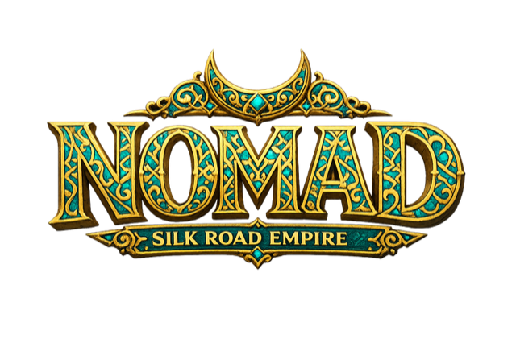
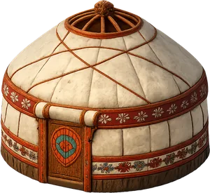
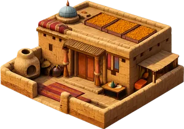
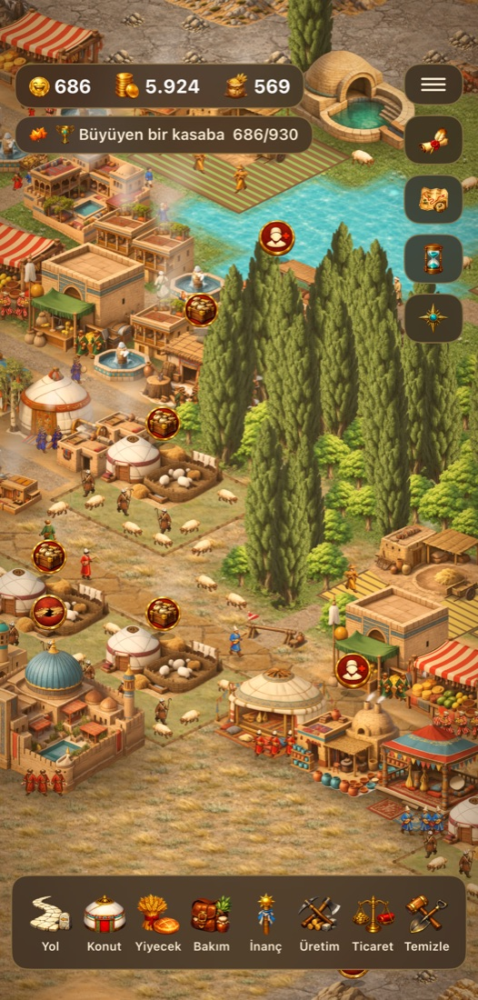
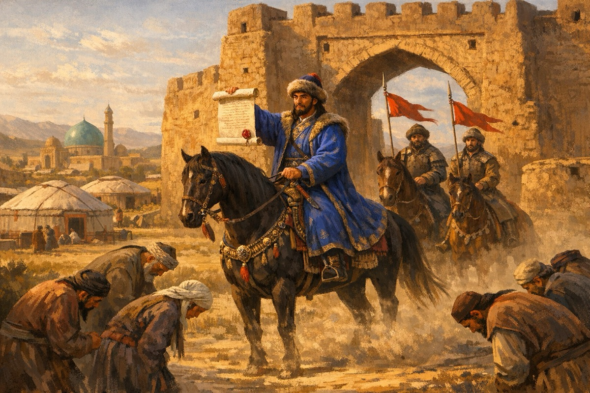
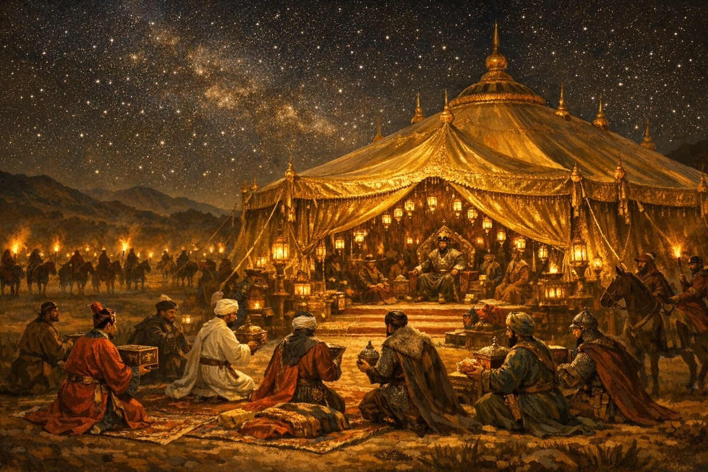

Bozkırda on beş aileye önderlik edin.
İpek Yolu'nda onlara bir imparatorluk kurun.
English · Русский · Türkçe · Deutsch · Français · Español
Büyük şehir kurma oyunlarının ruhunu taşıyan NOMAD, Orta Asya'nın keçe çadırları, kervansarayları ve firuze kubbeleri arasında geçiyor. Her yolun, her kuyunun, her sunağın bir görevi var.
Koyun otlatın, buğday ekin, taş kesin, demir çıkarın. Yünü keçeye, kili çömleğe, kozayı ipeğe dönüştürün.
Beş büyük şehrin her biri farklı mallar arar. Mallarınızı kasabanızın kapısında satın ya da daha iyi fiyat için kendi kervanınızı doğuya yollayın.
Karnı tok, suyu bol, kutsanmış ve okumuş halkınız keçe çadırlardan rüzgâr kuleli konaklara taşınır; oba önce kasabaya, sonra başkente dönüşür.
Halkın ihtiyaçlarını karşıladıkça konutlar gelişir. Önce su, sonra yiyecek getirin. Ardından şamanın duasını, otacının bakımını, masalı ve müziği, mektebi, hamamı ve yeşil, sakin bir sokağı sağlayın; her evin bir üst seviyeye çıkışını izleyin.







Sakalar, şamanlar, ozanlar ve tahsildarlar sokaklarınızda dolaşır; önünden geçtikleri her eve hizmet götürür. Çocuklar oynar, kadınlar kuyudan su taşır, her ocaktan duman yükselir.
Kasabanız büyüdükçe tanrılar daha çok sunak ister. Yeni sunaklar kurun ya da bir sunağı mabede, sonra tapınağa yükseltin; tanrı adına bir toy düzenlemek de gönlünü kazanır.

Bozkırın üstündeki uçsuz mavinin efendisi.

Ocakların, anaların ve çocukların koruyucusu.

Toprağın altındaki her şeyin sahibi.

Büyük şehirlerden kervanlar sırayla gelir. Her kervan, şehrinin aradığı mallara normal fiyatın 1,5 katını öder. İpeğinizi Semerkant için saklayın, keçenizi kışın Buhara'ya satın ve pazarı tek bir mala boğmayın.
Danışmanlarınız ambarları, tanrıları, hazineyi ve ufuktaki haydutları gözetir; kasabanın sırada neye ihtiyacı olduğunu size açıkça söyler.
 Vezir BekzatBaş danışman
Vezir BekzatBaş danışman Elçi AltınbekHanın işleri
Elçi AltınbekHanın işleri Aygerim AnaHalk
Aygerim AnaHalk Şaman KökbörüTanrılar
Şaman KökbörüTanrılar Yüzbaşı TemirGüvenlik
Yüzbaşı TemirGüvenlik YusufKervanbaşı
YusufKervanbaşı
Savaşları için at, keçe ya da altın ister. İsteklerini gönderin, boy büyüğünden hanın sağ koluna yükselin. Üst üste üç kez karşılamazsanız ordusu üzerinize yürür.
Nüfusunuz belli bir sayıya ulaşınca en görkemli yapıların kilidi açılır. Yine de bedellerini akçeyle, taşla ve keresteyle ödemeniz gerekir.

Müderrisler ilmi en seçkin evlere taşır.

Üç tanrıya birden, açık göğün altında tapınılır.

Daha bol vergi, daha mutlu bir halk. Her şehre yalnızca bir tane.

Şehrinizin harikası: yıllar içinde, dört aşamada, taş taş yükselir.
Keçe çadırlardan kurulu ilk obadan Altın Orda'ya uzanan bir sefer; yolda “Uzun Kış”, “Haydut Diyarı” ve “Veba Yılı” sizi bekler. Ya da Uçsuz Bozkır'da hiç tükenmeyen hedeflerle kendi hanlığınızı kurun.



Eğitim ve seferin ilk senaryosu ücretsizdir; dilediğiniz kadar oynayın. Tek seferlik satın almayla oyunun tamamını kalıcı olarak açın. Şehriniz cihazınızda kaydedilir; hiçbir yere üye olmanız gerekmez.
Çok yakında iPhone ve iPad'de. Başlamak ücretsiz.